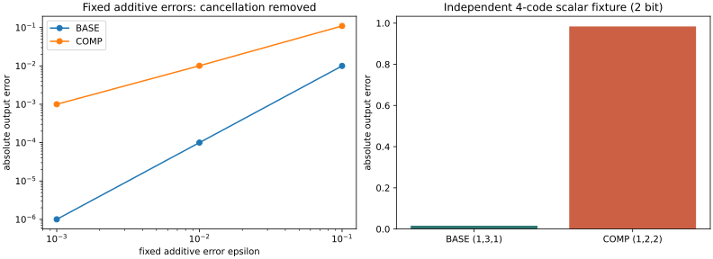

한국어DIOVA · CASE014 · LOCAL REVIEW
What survives after compensation?
A diagnostic tool for checking what survives after quantization compensation is saved again. It separates inherited error, existing cancellation and re-quantization on common inputs, with a controlled path toward held-out document quality evaluation.
Overview
Implemented fitting, actual INT4 serialization/reload and error decomposition. Fifteen unique CPU tests pass.
P1 model experiment NOT RUN: awaiting D-original storage clarification. No LLM quality score is supplied.
Correction and cancellation
For fixed errors with ε=0.01, absolute error changes from 0.0001 to 0.0101 after compensation: removing one error disrupts existing cancellation. With the other sign, error improves from 0.0201 to 0.0101.
The independent four-code example gives teacher 3.016, BASE 3 and COMP 4: error 0.016→0.984. Final-layer inputs differ (3 versus2). This is a two-bit scalar illustration, not a frequency estimate for INT4 language models.

Comparison
Six targets × five strengths. Earlier blocks use RTN; the target and full remaining model are evaluated together. Selection freezes on 32 CAL books before 16 DEV,32 EVAL and 16 SHIFT documents.
Equations, dtype and serialization boundary
W[out,in], X/Z[in,tokens]. CAL only: G=ZZᵀ, λ=10⁻³trace(G)/d, (G+λI)Kᵀ=[W(X−Z)Zᵀ]ᵀ. δW=αK, W*=W+δW.
CPU FP64 Cholesky + triangular solves, full-input Gram, row chunks128. Quantizer input is FP32(W*). Reloaded FP32 What supplies algebra; BF16(What) supplies dense quality execution. Bias remains unchanged.
A=W(X−Z), C=δWZ, B=(What−W*)Z, B₀=(What₀−W)Z, R=A−C−B, R₀=A−B₀.
Δ=||R||²−||R₀||²=T_inherited+T_cancellation+T_requant.
T_inherited=||C||²−2⟨A,C⟩; T_cancellation=2⟨B₀,C⟩; T_cont=||C||²−2⟨R₀,C⟩; T_requant=||ΔB||²−2⟨R₀−C,ΔB⟩.
T_cont holds B₀ fixed: a counterfactual, not a measured continuous model. Actual BF16 arithmetic residual and weight-cast residual are separate. Ridge H is not generally a projector. Evaluation never refits K, scale or codes.
Results
Every nonzero-strength dither cell had lower paired mean SSE than alpha0. This is an observation for a small linear network with fixed-step, conditionally unbiased noise. MC intervals describe independent noise seeds on one fixed input, not document generalization or finite-INT4 LLM quality.
Full P1 grid — 0/30 completed
| Block | Projection | α | Status |
|---|
| 4 | o_proj | 0 | NOT RUN |
| 4 | o_proj | 0.25 | NOT RUN |
| 4 | o_proj | 0.5 | NOT RUN |
| 4 | o_proj | 0.75 | NOT RUN |
| 4 | o_proj | 1 | NOT RUN |
| 4 | down_proj | 0 | NOT RUN |
| 4 | down_proj | 0.25 | NOT RUN |
| 4 | down_proj | 0.5 | NOT RUN |
| 4 | down_proj | 0.75 | NOT RUN |
| 4 | down_proj | 1 | NOT RUN |
| 12 | o_proj | 0 | NOT RUN |
| 12 | o_proj | 0.25 | NOT RUN |
| 12 | o_proj | 0.5 | NOT RUN |
| 12 | o_proj | 0.75 | NOT RUN |
| 12 | o_proj | 1 | NOT RUN |
| 12 | down_proj | 0 | NOT RUN |
| 12 | down_proj | 0.25 | NOT RUN |
| 12 | down_proj | 0.5 | NOT RUN |
| 12 | down_proj | 0.75 | NOT RUN |
| 12 | down_proj | 1 | NOT RUN |
| 20 | o_proj | 0 | NOT RUN |
| 20 | o_proj | 0.25 | NOT RUN |
| 20 | o_proj | 0.5 | NOT RUN |
| 20 | o_proj | 0.75 | NOT RUN |
| 20 | o_proj | 1 | NOT RUN |
| 20 | down_proj | 0 | NOT RUN |
| 20 | down_proj | 0.25 | NOT RUN |
| 20 | down_proj | 0.5 | NOT RUN |
| 20 | down_proj | 0.75 | NOT RUN |
| 20 | down_proj | 1 | NOT RUN |
All seed SSE and exact records · decision.json